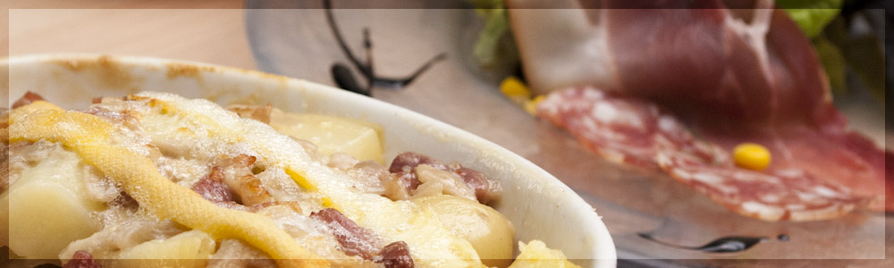

Lexique
Algorithme: Un algorithme est une suite finie et non ambiguë d’opérations ou d'instructions permettant de résoudre un problème.
Langage de programmation: Un langage de programmation est une notation conventionnelle destinée à formuler des algorithmes et produire des programmes informatiques qui les appliquent.
page web: Une page web ou page sur la toile est une ressource du World Wide Web conçue pour être consultée par des visiteurs à l'aide d'un navigateur web.
serveur: Un serveur est un dispositif informatique matériel ou logiciel qui offre des services à différents clients, comme l'accès aux informations du World Wide Web.
navigateur: Un navigateur Internet est un logiciel informatique qui permet à un utilisateur d'accéder à l'Internet.
langage de description: Un langage de description de format de document est un langage permettant de définir un jeu de règles et contraintes qui seront utilisées pour savoir si une instance de
document est valide par rapport à ce même jeu de règles et contraintes.
octet: un octet est un regroupement de 8 bits codant une information. Dans ce système de codage, s'appuyant sur le système binaire, un octet permet de représenter 28, c'est-à-dire 256, valeurs
différentes. Un ou plusieurs octets permettent ainsi de coder des valeurs numériques ou des caractères.
représentation binaire: Le système binaire est un système de numération utilisant la base 2. On nomme couramment bit les chiffres de la numération binaire positionnelle. Ceux-ci ne peuvent prendre
que deux valeurs, notées par convention 0 et 1.
hexadécimal: Le système hexadécimal est un système de numération positionnel en base 16. Il utilise ainsi 16 symboles, en général les chiffres arabes pour les dix premiers chiffres et les lettres A
à F pour les six suivants.
Nombre de Niven: un nombre de Niven est un entier naturel qui est divisible par la somme de ses chiffres dans une base donnée.
Tartiflette: La tartiflette est un gratin de pommes de terre, de lardons, d'oignons sur lequel on fait fondre du reblochon, un fromage originaire de Tartiland, alias, le pays de la tartiflette.